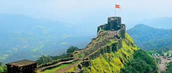
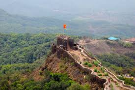
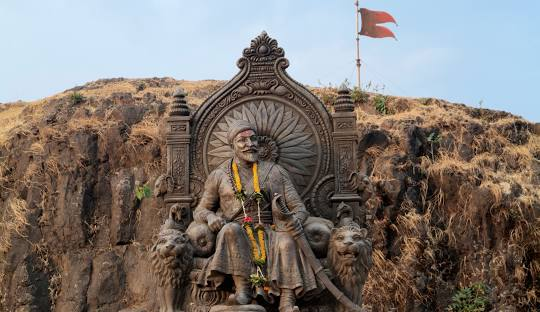
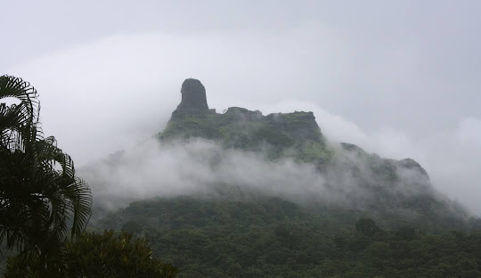

  
info
Chhatrapati Shivaji Maharaj had extended his kingdom on the banks of rivers Nira and Koyana. In order to safeguard this area of his kingdom, he felt need to have a well-built fort. This fort is called Pratapgad . As per the records in the history, Pratapgad fort was built in the year 1657. Pratapgad is situated at 8 kilometres, west of Mahabaleshwar, in Jawali taluka of North Satara district. The fort is built on the mound named Deparya, between Par and Kineshwar towns.
On way from Mahabaleshwar to Mahad, there is a place called Kumroshi. From there, it is a journey of half an hour. It is difficult to climb fort. The fort is situated in the area called Jawali forest. Renowned poet Govind described the environments around fort Pratapgad in very lucid words.
Places of interest on Pratapgad
There is pathway on the left side of the bottom of fort. The plaque shows way to Darga Sharif. This is place where tomb of Afzalkahn is situated. This fort has only one main door. Below it there is a stream which carries rain water from upstream down the slope. It is possible to reach the door after climbing few steps. There are bastions inside this door which were used by soldiers guarding the main door. This bastion can be seen by going around in 3/4th of the circle.
As per historical when Chhatrapati Shivaji Maharaj assassinated Afzalkhan after being betrayed by him, his head wad buried under this bastion by Sambhaji Kavaji, a masculine lieutenant of Shivaji Maharaj. When a window of Nagarkhana (A place where drums are placed and played) is opened one can see the face of Goddess’s idol. A story goes around about this Goddess that, Shri Shivaji Maharaj had started a ritual of playing Sanai-Chaughada (A type of religious band) before the Goddess. A priest with Hadap as a surname was deputed to offer Naivedya (food offered to the Deity as part of ritualistic worship) and Panchamrut (a mixture of milk, curd, honey, sugar and pure ghee). This temple of Goddess Bhavani includes Sabhamandap ( A hall in front of sanctum sanctorum) and Nagarkhana.
After climbing 100-200 steps from temple, there is a small door, which is a entrance to the fort. In front, there is quadrangular terrace. From the aerial view, Pratapgad fort resembles a butterfly. Its length is1400 feet and width is 400 feet. It has a unique fortification. The North-western precipices are more than 800 feet in height. There are two water tanks on North-eastern side of the fort. From here one can get panoramic view of Koyna basin. This ends the round trip of the fort
Histoey of pratabgad
In the year 1657 Chhatrapati Shivaji Maharaj became too powerful to be tolerated, for the rulers of Vijapur. His strength was on rise. He used to conquer new provinces of Vijapur kingdom from time to time. To restrain Shivaji Maharaj, Afzalkhan was deputed, but Shivaji Maharaj tactfully assassinated him. This incident is recorded in the history in great details. The tomb of Afzalkhan still exists there. It is built at levelled ground on the third stage of down slope amid trees. Pratapgad fort is famous for beauty of nature in and around it.
The second most important aspect of Pratapgad fort is the assassination of Afzalkhan. When Afzalkhan called Chhatrapati Shivaji Maharaj to meet him at the bottom of the fort, he tried to kill Chhatrapati Shivaji Maharaj by way of treachery. Chhatrapati Shivaji Maharaj assassinated him by removing his intestines after cutting open his stomach. A bodyguard of Afzalkhan, Sayyad Banda tried to kill Chhatrapati Shivaji Maharaj by brandishing his sword. But the security man of Maharaj, Jiva Banda was vigilant enough to thwart this attempt and killed Sayyad Banda. So the phrase “ It was Jiva, who saved Shiva” was coined and became immortal in the history of this fort. The army of Maharaj which was hiding in the jungles of Jawali made 1500 soldiers of Afzalkhan run helter-skelter. Thus the existence of this fort is testimony to the bravery of Chhatrapati Shivaji Maharaj.